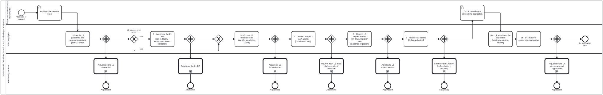

Generated from
smart-base/skills/content/authoring-who-smart-guidelines/smart-guideline-end-to-end.md— do not edit here.
smart-guideline-end-to-end
Skill id:
smart-guideline-end-to-end· Package:authoring-who-smart-guidelines· Process:smart-guideline-end-to-end.bpmn
This skill is the order, the hand-off between stages and the adjudication rule. Each stage is its own named skill with its own input and output contract. What a stage does, it says in its skill; nothing here repeats it. Every record a stage or review leaves uses a schema that already exists, named in What it reuses. If a stage needs something its skill does not say, fix that skill. Do not add it here.
Input and output
The contract is input.schema.json and output.schema.json.
- In: the
request, verbatim; theuseCasewhen stage 0 is already done; the guideline’s featurebranch. - Out: every stage’s artefact under the name the stage table gives it (
useCase,l1Sources,l1Kg,l2Dependencies,l2Assets,l3Dependencies,ig,applicationBrief,wireframes,application), and oneadjudicationsentry per stage with itsQaReviewandoutcome. The guideline is done only when no outcome ispending.
The rule that shapes everything: adjudication is QA, not a gate
Owner, 2026-10-14: “while adjudication is required at every step, it is a QA issue, not a gate. so once agent produces L2 it can produce L3.”
So every stage ends in a fork, not a decision:
stage n (agent) ──┬──► stage n+1 (agent) keeps going
└──► adjudicate stage n (human) runs beside it
What follows from that:
- Every stage needs adjudication, and the guideline is not done until every adjudication is recorded. Not waiting is not the same as skipping. The process ends only when the last stage and all its adjudications are in.
- An asset built on unadjudicated input says so. Each derived KG node
already names its inputs in
wasDerivedFrom(hash-pinned, so a changed input makes it stale;smart-base/kg/src/graph.ts). The adjudication state of an input goes on that edge’s openproperties, beside theresolutionStatusandreviewStatusthatrecommendation-extractionalready puts there:adjudication: pendingwhile the input’s review is open. This is provenance, not a warning banner. When the review closes, the property updates. - A rejection reopens the stage, and the flag spreads downstream. A
request-changesorrejectdecision files a bean against the stage. Every downstream asset derived from the rejected item getsadjudication: rejected-upstreamon that edge, and is re-derived when the stage is redone. It is not deleted ahead of time: the re-derivation may come out the same. - The agent never adjudicates. The person who signs is named by role
(table below). An agent may prepare the review material, never record the
verdict. This is
recommendation-extraction’s sign-off rule applied to every level.
The order is a rule: L1, then L2, then L3 (owner, 2026-10-15)
QA-not-a-gate is about verdicts. It never licenses skipping a stage. Owner, 2026-10-15: “this is a process failure to not make L1 and L2 assets first and have sign off”, ruled as order strict, sign-off QA:
- Each stage’s output exists before the next stage starts. Stage 2
writes
library/<bib>/l1-extraction/for every source of the use case; stage 4 writes the L2 assets; only then does stage 6 write FSH, CQL or any other L3 file. Source documents (a schedule poster, a slide deck) are stage-2 input, never direct input to L3. - Sign-off is requested before the next stage starts. Each stage’s
review items (
Process_Review, one per asset) are opened, staged and handed to their adjudicating role before the next stage begins. The verdict is not waited for (QA, as above), but an asset whose review was never requested has not finished its stage. - Every L3 asset names the L2 asset it implements, and every L2 asset
the L1 node it rests on, in
wasDerivedFromwith the edge’sadjudicationstate. An L3 asset with no L2 upstream is a finding, not a shortcut: a green build and passing tests do not make up for it. - A request that skips stages is still this process. “Adapt X to
using these documents" is stages 0–6. If the request names no L1/L2 work, the agent does it anyway and says so; it does not read the absence as permission to go straight to L3.
Why the rule is written down. On 2026-10-15 an agent asked to adapt
the WHO immunization guidelines to Uganda (https://github.com/litlfred/smart-immunizations-uganda/issues/1)
read the poster and the UNEPI deck by eye and wrote CQL, a PlanDefinition and
prose pages directly (#3): no library entry, no L1 extraction, no L2 decision
table, no review requested. CI was green throughout. The causes were that the
new repository had no pointer to this skill and no platform mount
(smart-guideline-create §6 now requires
both), and that nothing checked the order (rule 3 above).
l2-dak-authoring.bpmn follows the same rule (owner, 2026-10-14). Its
Clinically accurate? decision now runs beside assembly, not before it: a
parallel fork after the authoring join starts clinical validation and
assembly together. changes needed still sends the work round again, which
re-assembles the DAK. validated ends in its own event.
The stages
Each stage’s Out is the next stage’s In. Within smart-base the contracts carry the same definition under the same name (a contract is read standalone, so each carries its own copy, and the copies are identical). The two stages run by other layers’ skills are called through the mapping in their row.
| # | stage | skill | In | Out | adjudicated by |
|---|---|---|---|---|---|
| 0 | Describe the use case | guideline-use-case | the request | useCase | (the requester is the source) |
| 1 | Identify L1 guidelines and recommendations | dak-l1-library | useCase | l1Sources: each candidate in-library / in-kg / not-yet, included or not, and why | Clinical SME |
| 2 | Ingest into an L1 KG the sources not yet in one | recommendation-extraction (after bun run cat ingest and dak-l1-library’s generic-document layer for a source not in library/) | l1Sources | l1Kg: per source, library/<bib>/l1-extraction/, coverage, every WARNING | l1-extraction-reviewer (exclusions, coverage), Clinical SME (recommendations) |
| 3 | Choose L2 dependencies (WHO / jurisdiction DAKs) | l2-dependency-choice, with smart-base-tools §Adapting a DAK for how each candidate produces each component | l1Kg | l2Dependencies: one decision row per candidate DAK, and per component the toolchain stage 4 will use | Programme manager + Business analyst |
| 4 | Create or adapt the L2 DAK assets | l2-dak-authoring, once per component, with the stage-3 toolchain (smart-base-tools), in the steps of l2-dak-authoring.bpmn, each an edit-then-review call into l2-component-edit-review.bpmn; pre/post-processing by dak-preprocessing / dak-postprocessing as smart-base’s overlay on fhir-harness’s AST cache refresh | dakComponent, sourceGuideline, l1Kg, l2Dependencies | artifacts of every pass, which are l2Assets | per asset, see Per-asset review |
| 5 | Choose L3 dependencies (WHO / jurisdiction IGs) | l3-dependency-choice, indexing with ig-artifact-ingestion, with smart-base-tools §Adapting a DAK for how each candidate builds and tests its CQL and examples | l1Kg, l2Assets, l2Dependencies | l3Dependencies, and per artefact type the toolchain stage 6 will use, and the IG indexes | FHIR modeller + Terminologist |
| 6 | Produce the L3 assets, only once Gateway_L3Ready says yes on l3-readiness (the order rule) | fhir-harness l3-fhir-authoring with l2-dak-authoring and the stage-5 toolchain, in dak-l3-ig.bpmn, up to a clean IG build | per artifact: artifactType, sourceModel = an l2Assets path; the adjudicated l3Dependencies rows become sushi-config.yaml dependencies | fshFiles, sushiResult, generatedResources, read as ig with its igRoot | per asset, see Per-asset review |
| 7 | L4: describe the consuming application | l4-application-brief | useCase, l2Assets, ig | applicationBrief, and the wireframeRequest | (the requester is the source) |
| 8a | L4: wireframe the application | cat-harness wireframe-design-review, design use | wireframeRequest, unchanged | the candidates and the choice, read as wireframes | Business analyst + Clinical SME, with the requester choosing |
| 8b | L4: build the consuming application | l4-application-build | applicationBrief, ig, wireframes | application, with its conformance and scenario tests | Business analyst + Clinical SME (does it do what the L2 says?), FHIR modeller (does it conform to L3?) |
Stages 0 and 7 belong to the requester: the agent asks, and never invents the use case or the application.
Between stages 5 and 6 sits Gateway_L3Ready, the order rule
as a decision. It is not a stage, but the check it decides on has its own
skill, l3-readiness (owner, 2026-10-16), run as
Task_L3Ready just before it: In l1Kg, l2Assets, the reviews
requested and the L3 artefacts about to be written; Out ready and the
findings. No goes back to stage 4.
Publication of the IG (the end of dak-l3-ig.bpmn) runs as normal and is not
on the path to stage 8: an application can be built against an IG that has
not been published yet.
Every adjudication in the process is a call to cat-harness’s generic review,
Process_Review (processes/content/review-task.bpmn): it works out what
kind of change it has, runs the review that fits, and accepts or sends back.
When reviewers disagree, that process hands over to Process_Adjudication.
Neither is copied here.
Staging: every review looks at a staged preview
Each stage commits to the guideline’s feature branch, and that branch is
staged by
feature-staging
(Process_FeatureStaging) on the site its section Which site names: a
guideline in a repository of its own is previewed on that repository’s own
Pages, and smart-base itself, which folio-assistant mounts, by a staging
re-pin on the platform’s site. An IG repository’s site needs its AST cache
seeded first (fhir-ig-create,
new-repo step 5). Neither rule is WHO’s, so neither is restated here.
The IG Publisher’s branches/ preview (ghbuild.yml, /deploy)
is the IG’s, not this content’s, and is never the preview for it. A review item
never links to source alone. It links to the staged page, through
staging-review, which returns before (main) and after (staging)
URL pairs. A new guideline that has no repository yet is staged inside the
current one first, as smart-guideline-create
already defaults to (in-repo, a staged sub-KG).
Per-asset review
Every asset a stage creates or changes gets its own review item. An asset
that was reused unchanged gets none: its upstream’s adjudication covers it.
The review item shows the asset the way its reviewer reads it, not as source,
on the staged preview. At L2 it is a run of l2-component-edit-review.bpmn, whose skill gives each row’s checker, renderer and reviewer:
| level | asset | review shows |
|---|---|---|
| L1 | recommendation / remark / practice | the node beside the printed sentence and page |
| L2 | persona, user scenario | the card: role, goal, setting |
| L2 | business process (BPMN) | the rendered diagram (render:bpmn / dak-swimlanes) |
| L2 | decision table (DMN) | the table (dmn2html), with the L1 recommendation each rule cites, and its test cases |
| L2 | core data elements | data-dictionary rows (dak-data-dictionary) and their term diff (dak-data-dictionary-diff), and the chosen wireframe of each form that captures them (see Forms are designed as wireframes) |
| L2 | indicators, requirements | the indicator definition / requirement list, each with the persona and process it serves |
| L3 | Questionnaire | the L2 wireframe it was derived from, beside the Questionnaire’s field ↔ item correspondence (see below). The design was already reviewed at L2, so this review checks fidelity to it, not the design again |
| L3 | profile, logical model | the IG Publisher’s differential view |
| L3 | CQL / PlanDefinition | the logic beside the DMN rule it implements, and its test cases passing or failing |
| L3 | terminology | the expansion, and the mapping to ICD-11 / SNOMED CT / LOINC |
| app | screen / flow | the chosen wireframe beside the running screen, walked through the L2 scenario it serves |
Forms are designed as wireframes at L2
A data-entry form is designed once, at L2, and the L3 Questionnaire is derived from that design. It is not designed at L3 and then drawn back as a picture for review.
- Stage 4: design. For each business-process activity where a persona
records data, the agent runs
wireframe-design-reviewin its design use. The intent comes from the L2 assets: the persona (who), the activity and its user scenario (what they do), and the core data elements the activity captures (what it shows). That produces two or more candidates, each with a web and a mobile layout, using real content: the data elements’ labels, value sets and the DMN rules that show or hide a field. Each field carries the id of the core data element it captures (adata-elementattribute). Under the QA rule the agent goes on with its recommended candidate. The review and the choice between candidates (Process_Adjudication,Process_OptionsAnalysis) are that form’s stage-4 adjudication. - Stage 6: derive. The Questionnaire follows the chosen wireframe:
one item per field, in its order and grouping, each item’s
definitionpointing at the logical-model element of the same core data element, andenableWhentaken from the same DMN rules. Stage 6 review: fidelity. It is fhir-harness’s skill
fhir-questionnaire-wireframe(processProcess_QuestionnaireWireframeReview), run on each built Questionnaire with the chosen wireframe as its L2 wireframe. Its fidelity step is fhir-harnesscheck-wireframe-questionnaire, which pairs the wireframe’sdata-elementattributes with the Questionnaire items’definitions. A field with no item, an item with no field, or a different order is a finding. The check compares two lists and renders nothing:bun run fhir-harness/scripts/check-wireframe-questionnaire.ts <wireframe.html> <Questionnaire.json>A wireframe that draws web and mobile as separate subtrees marks each with
data-layout, and each layout is checked on its own. A Questionnaire item names its data element bydefinition(the URL, or the element path after#) or bycode[].code. Exit 0 faithful, 1 a finding, 2 unreadable input.
If the chosen wireframe changes later (a review asks for it), the
Questionnaire derived from it is flagged rejected-upstream like any other
derived asset. A change request on either side — through ✍ suggest or the
questionnaire-change issue form — says which side was edited, and the other
is brought back in line (fhir-questionnaire-wireframe, step 7).
An adaptation is reviewed as a diff. When the asset came from a stage-3 or
stage-5 dependency with decision: adapt, the review item shows before
(the upstream asset at its pinned version) and after side by side, with the
change highlighted, and the L1 node that justifies the change. At L3 the diff
is fhir-harness’s ig-ast-delta (element-level, per resource). At L2, and
for anything rendered, it is before-after-preview, drawn with one of the
DiffRenderers in schemas/diff-renderers.ts. A changed asset
with no L1 justification is a finding in its own right: an adaptation is local
evidence or local policy, and the KG has to say which.
The record of a review item is a cat-harness QaReview (qa-review/v1,
schemas/qa-review.ts): subject is the asset, and each verdict is a
Decision whose role is the adjudicator’s role id. Its outcomes are the
ones to use:
| outcome | meaning here |
|---|---|
approve | the asset stands |
request-changes | reopen the stage for this asset. If the reviewer wrote the fix themselves, it goes in an AuditNote and the agent applies it as given |
reject | the asset is wrong at the root (wrong source, wrong dependency). Reopen the stage that chose it |
At L1, recommendation-extraction keeps its existing review: {by, at}
fields on the mapping. The QaReview is the record of the stage’s review,
not a replacement for those fields.
New guideline or adaptation: one process
An adaptation is not a separate process. It is this process with stages 3 and
5 returning adapt decisions, which makes stages 4 and 6 show diffs. A new
guideline is the case where those stages return only reuse, extend or
nothing. Do not maintain two copies of the stages.
What it reuses
| need | reused from | new? |
|---|---|---|
| each stage | the stage skills in the table | guideline-use-case, l2-dependency-choice, l3-dependency-choice, l4-application-brief, l4-application-build are new, each with its contract |
| each adjudication | cat-harness Process_Review, then Process_Adjudication on disagreement | no |
| review record and verdict | cat-harness qa-review/v1: QaReview, Decision (approve · request-changes · reject), AuditNote | no |
| who adjudicates | role ids: clinical-sme, programme-manager, business-analyst, fhir-modeller, terminologist, reviewer, and smart-base’s l1-extraction-reviewer | no |
| staged preview, before/after links | feature-staging, staging-review | no |
| diffs | ig-ast-delta (L3), before-after-preview with DiffRenderer (L2, rendered pages) | the data-dictionary term diff dak-data-dictionary-diff.ts is new |
| form and app design | wireframe-design-review, design use: L2 forms (stage 4) and the application (stage 8a) | no; the stage-6 fidelity review is fhir-harness fhir-questionnaire-wireframe, whose field ↔ item check is fhir-harness check-wireframe-questionnaire |
| dependency row | DependsOnRecord, DependsOnGap, KG evidence, in l2-dependency-choice | adds decision, reason and toolchain |
| the tooling that produces each component | the tools graph (bun run cat check:tools), the upstream repository’s own scripts, WHO’s DAK toolchain: smart-base-tools | no |
| provenance flag | KG wasDerivedFrom and edge properties | adds the values pending and rejected-upstream |
What this does not change
- The WHO DAK component set and L1–L4 layering:
smart-stack-layering. - How a new repository or IG is set up:
smart-guideline-create. Run it before stage 4 if the guideline has no home yet. - The persona-swimlane lifecycle (planning, QC, translation, publication) on the IG’s Authoring Process page. Those phases still run. This process says what goes into phases 2a and 2b, and what comes before and after them.
Processes that run this skill
This skill has its own process: SMART Guideline end to end.
